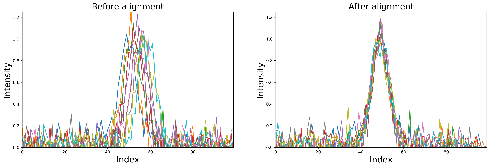

Welcome¶


This package was inspired by MATLAB's msalign function which allows alignment of multiple signals to reference peaks.
Quick installation¶
pip install msalign
Quick usage¶
import numpy as np from msalign import msalign fname = r"./example_data/msalign_test_data.csv" data = np.genfromtxt(fname, delimiter=",") xvals = data[1:, 0] zvals = data[1:, 1:].T peaks = [3991.4, 4598, 7964, 9160] kwargs = dict( weights=[60, 100, 60, 100], only_shift=False, ) zvals_new = msalign(xvals, zvals, peaks, **kwargs)
Example alignment¶
In the Usage section you will find a couple of examples of signal alignment based on single or multiple reference peaks.
